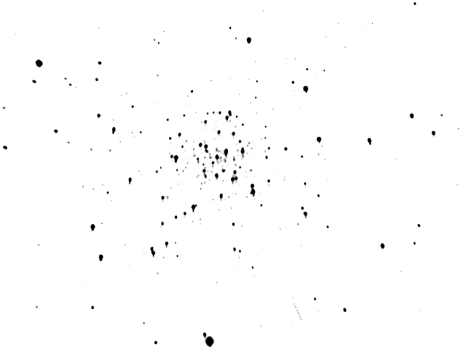
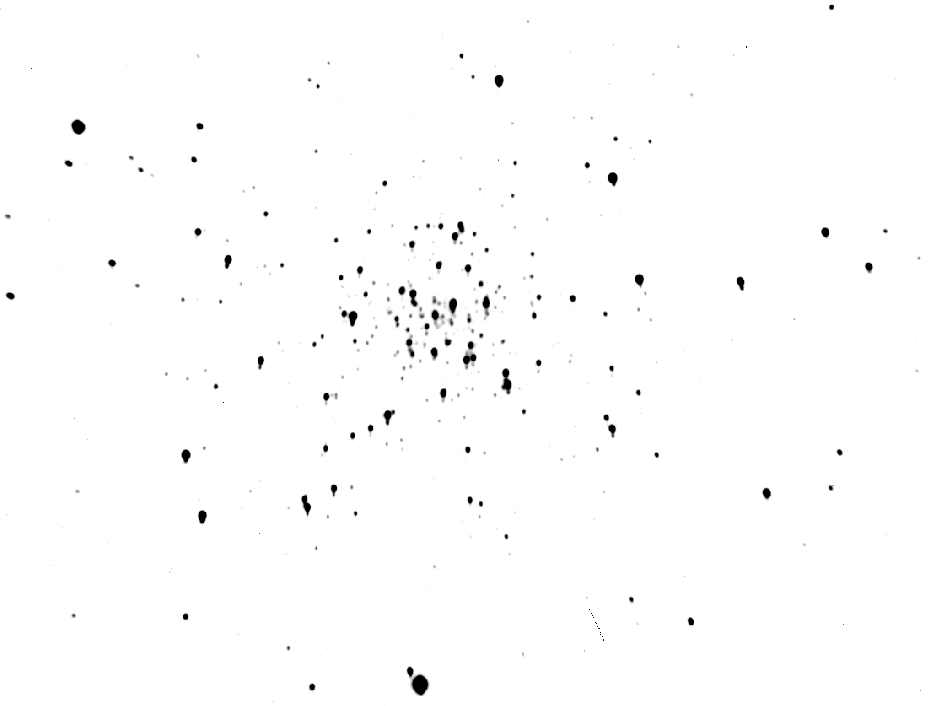

DuOCam
A Two-Channel Camera for Simultaneous Photometric Observations of Stellar Clusters
2University of Iowa
3Texas A&M University
Introduction
We have designed the Dual Observation Camera (DuOCam), which is capable of simultaneous photometric observations at red and blue wavelengths. The instrument was designed for implementation on the 0.9 m, f/13.5 telescope at McDonald Observatory. Light collected by the telescope passes into DuOCam’s optical assembly, where it is collimated, split into red and blue wavelengths and focused onto two independent charge-coupled devices (CCDs). In order to test the effectiveness of the camera, observations of both open and globular stellar clusters were carried out at McDonald Observatory. The resulting data was used to construct an R vs. B-R color-magnitude diagram for the cluster M 56.
Color-magnitude diagrams are used to determine key attributes of stellar clusters, including age, metallicity, and distance, which can shed light on the evolution of stars and the formation of structure in our Galaxy (Figure 1). They are created by plotting the magnitude of stars in a cluster in a color band versus the difference in magnitude of that color band and another color band. When these values are plotted for a stellar cluster, a clear evolutionary track can be seen, the parameters of which are used to determine cluster attributes.

Optics
In order to image the stellar cluster simultaneously in two separate wavelength bands, the light from the stars must be split. First, the light is collimated (made parallel), by use of a negative lens (-150 mm focal length) to prevent the introduction of aberrations by the dichroic. The light then encounters a blue dichroic, a specially treated piece of glass that transmits red light (~525 - 800 nm) and reflects blue light (~400 - 525 nm). This light is then refocused by positive lenses (+100 mm focal length) onto separate CCDs (Figure 2).
The lenses in this system (Figures 2 and 3a) were chosen in order to balance a maximal field of view with an optimal focus and light throughput. The complete system (instrument and telescope), had an effective focal ratio of f/11 (nominal 9.87 m focal length). This combined with an SBIG ST-8300M and an SBIG STF-8300M CCD allowed a field of view of 6.26’ x 4.71’, with a plate scale of ~.38 ”/pixel, binned 3x3. This is large enough to capture the majority of each of our stellar clusters in one image.
The effectiveness of the design was hindered by the use of a mounting box inherited from a previous project (Figure 3b). Space restrictions imposed by the box limited our ability to focus the optical system. Furthermore, the size of the optics (limited by the mounting box and by commercial availability) resulted in some vignetting in the corners of each image. Despite these limitations, the system is still able to achieve a nominal resolution slightly better than 2”, the approximate seeing at McDonald Observatory.
Observations


Observations occurred on four nights from July 21 to July 24 using the 0.9 m telescope at McDonald Observatory (Figure 4). The first night was devoted to focusing both CCDs. Data taking of previously selected stellar clusters (Table 1) began on the second night, using the OBSCCD_M software designed by Don Carona, which allows simultaneous data collection from multiple CCDs. Exposures of various lengths (10s, 30s, 60s, 90s, and 120s) were taken. The 60s exposures proved the most effective, balancing the need for a long exposure to capture dimmer stars with the telescope’s limited tracking ability.
| Name | Type | Size | Magnitude | Transit Height | Transit Time |
|---|---|---|---|---|---|
| NGC 6649 | Open | 6.0’ | 8.9 | 49° | 00:30 |
| M29 (NGC 6913) | Open | 7.0’ | 6.6 | 82° | 02:15 |
| IC 1369 | Open | 4.0’ | 6.8 | 73° | 03:00 |
| NGC 6934 | Globular | 5.9’ | 7.3 | 67° | 02:30 |
| NGC 6229 | Globular | 4.5’ | 9.4 | 78° | 23:00 |
| M56 (NGC 6779) | Globular | 7.1’ | 8.3 | 89° | 01:00 |
 
Analysis
NGC 6779, aka M 56, with a 60s exposure time from the night of July 23rd was selected as having data of high enough quality to produce a color-magnitude diagram. Dark frame subtraction and bias frame correction were performed on the raw data and the images were stacked (Figure 5). The fluxes of 52 stars visible in both the red and blue images were measured. A star was then located that was present in both images which had both an R and B magnitude available in the literature. The flux data was then magnitude calibrated and used to create a R vs. B-R color magnitude diagram of M 56. As seen in Figure 6, these stars follow the evolutionary track characteristic of stellar clusters. The tip of the main sequence as well as the main sequence turnoff and the beginnings of the red giant branch are clearly visible.
Conclusions
DuOCam achieved its design goal, which was to be able to image stellar clusters at red and blue wavelengths simultaneously. Color magnitude diagrams can be produced from its data which clearly display the evolutionary tracks characteristic of stellar clusters. Whether these diagrams can be used for deeper analysis of cluster attributes such as age and distance is uncertain. Several factors likely make our magnitude calibration unreliable for this task, including excessive sky background caused by the moon (the sharp gradient visible in Figure 5a) and spherical aberration of stars near the edges of our fields due to optics of insufficient size. Furthermore, the dichroic filter does not simply reflect blue wavelengths and transmit red wavelengths - rather, it reflects blue wavelengths and transmits the entirety of the remainder of the optical spectrum. Relative intensities, however, appear to remain roughly the same, allowing a color magnitude diagram to be produced, but the accuracy of that diagram may not be high without further calibration and characterization of DuOCam’s optical systems.
Additionally, DuOCam’s imaging capabilities would be improved were the CCDs able to be focused more finely. Should a similar project be undertaken in the future, we recommend the mounting box be redesigned to allow more freedom of movement of the optics, so that the system can be more effectively focused. The data would also be improved by observing at a time closer to new moon, as the near-full moon significantly affected our observations.
Overall, DuOCam performed within expectations, allowing the creation of a color-magnitude diagram, though steps could be taken to improve its performance and allow for more accurate measurements of the stars in stellar clusters.
References
(2007, June 19). Hertzsprung-Russell diagram. European southern observatory. Retrieved from ESO.
Barmettler, A. (2016, June 18). CalSky [computer software]. Available from https://www.calsky.com/
Carroll, B. W., & Ostlie, D. A. (1996). An introduction to modern astrophysics. Reading, MA: Addison-Wesley.